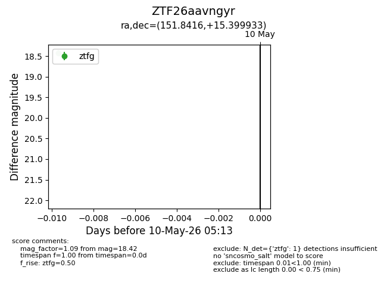
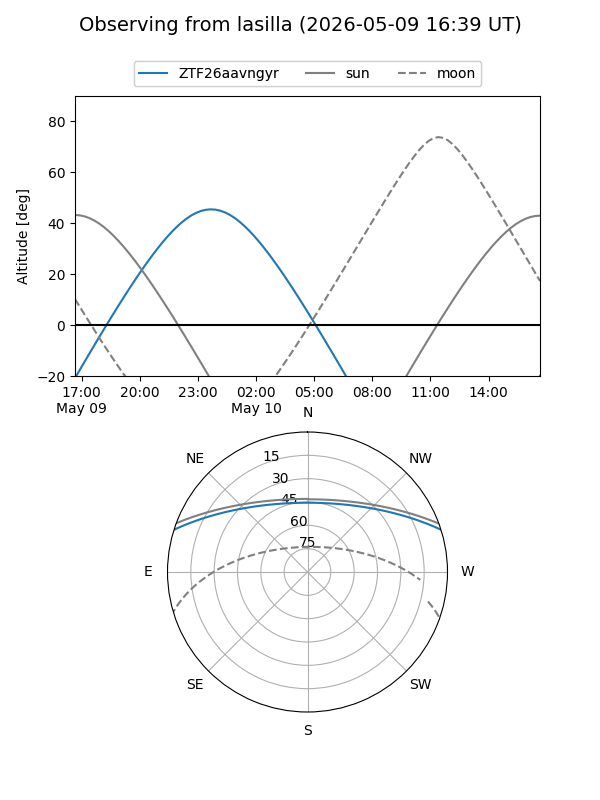
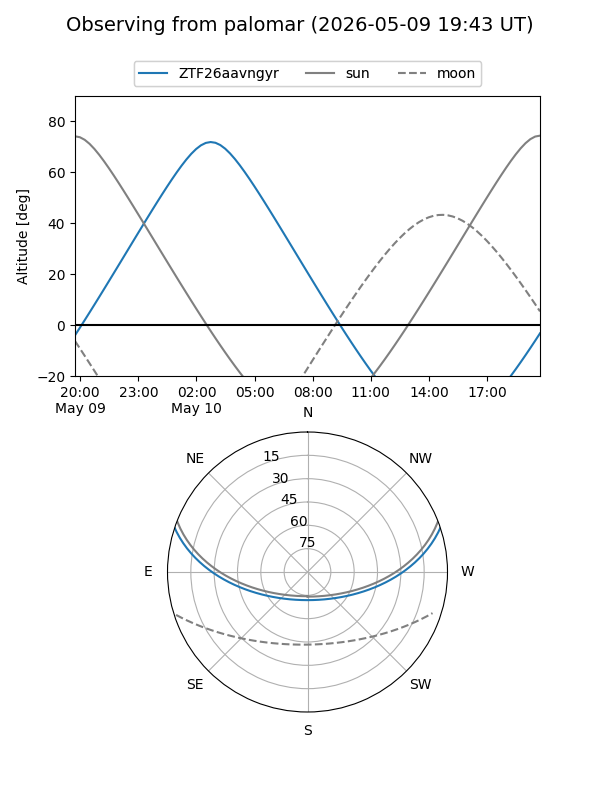

ZTF26aavngyr
Target ZTF26aavngyr at 2026-05-10 05:14
Aliases and brokers:
FINK: link
Lasair: link
ALeRCE: link
alt names
ZTF26aavngyr (ztf,fink_ztf)
Coordinates:
equatorial (ra, dec) = 151.8416,+15.39993
equatorial (HMS+DMS) = 10:07:21.99,+15:23:59.76
galactic (l, b) = (221.5016,+50.21756)
Flags:
Photometry:
last ztfg=18.42
1 ztfg detections
Lightcurve

Visibility


Additional plots